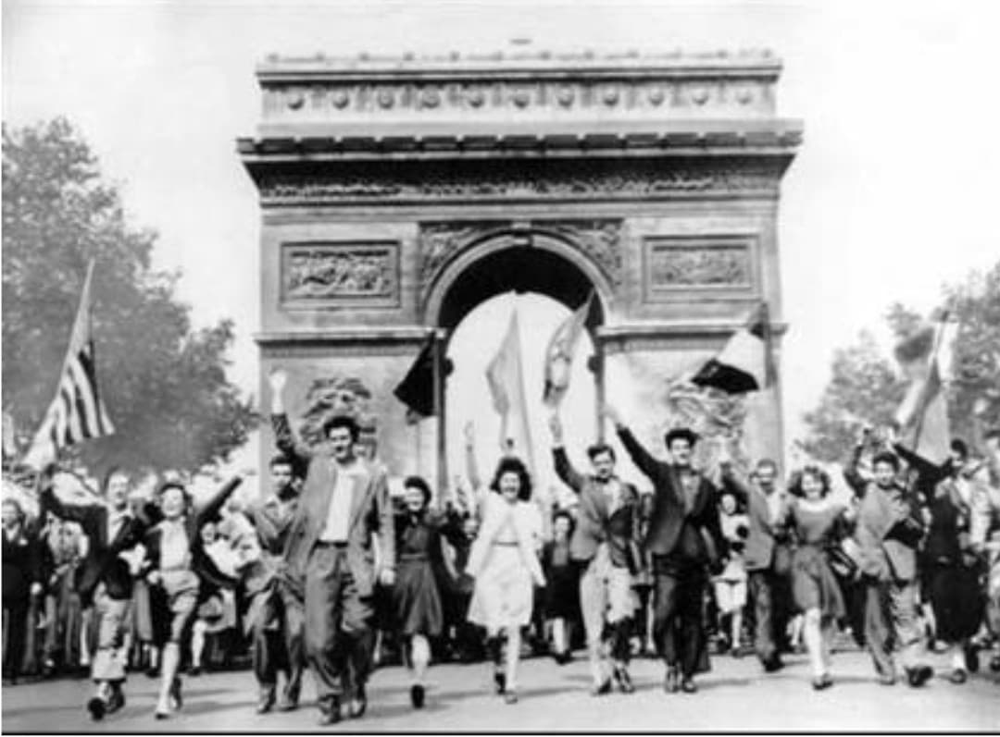
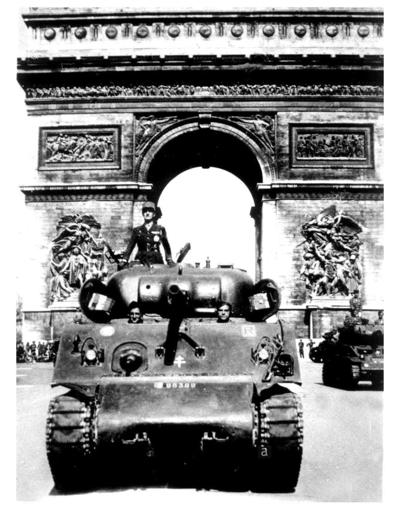
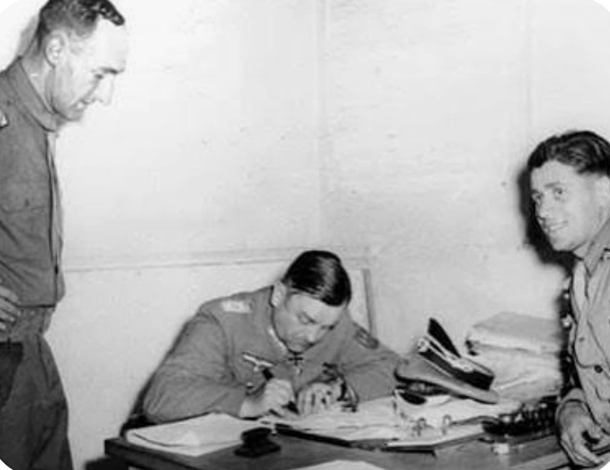
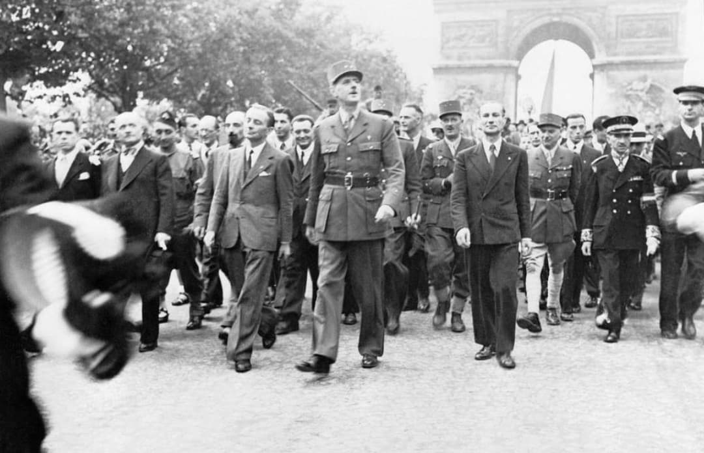

La libération de Paris, les 24 et 25 août 1944, est l’un des événements les plus symboliques de la Seconde Guerre mondiale. Après quatre années d’occupation, la capitale française retrouve enfin sa liberté grâce à l’action combinée de la Résistance intérieure, des Forces Françaises de l’Intérieur (FFI) et de la 2ᵉ Division Blindée du général Philippe Leclerc.
L’entrée des blindés de Leclerc dans Paris, la reddition du général von Choltitz et le défilé triomphal sur les Champs‑Élysées marquent la renaissance de la République et le retour de l’autorité française.
À l’été 1944, les forces alliées progressent rapidement en France après le débarquement en Normandie. Paris, occupée depuis juin 1940, est en pleine agitation : grèves, insurrections, combats sporadiques. La Résistance parisienne déclenche l’insurrection le 19 août.
Leclerc reçoit l’ordre de foncer sur Paris pour soutenir les insurgés et empêcher une destruction de la ville.
Le 24 août 1944, les premiers éléments de la 2ᵉ DB pénètrent dans Paris par la porte d’Orléans. Les habitants, malgré les combats, accueillent les soldats dans une liesse immense.
Leclerc installe son poste de commandement à l’Hôtel de Ville et coordonne les opérations avec les FFI.

Le 25 août, Leclerc se rend au siège du commandement allemand. Le général von Choltitz, gouverneur militaire de Paris, signe la reddition malgré les ordres d’Hitler de détruire la capitale.
Cet acte met fin aux combats et sauve Paris d’une destruction totale.

Le 26 août 1944, le général de Gaulle descend les Champs‑Élysées, acclamé par une foule immense. Ce défilé symbolise le retour de la souveraineté française et la victoire de la liberté.

⬅ Retour aux opérations militaires